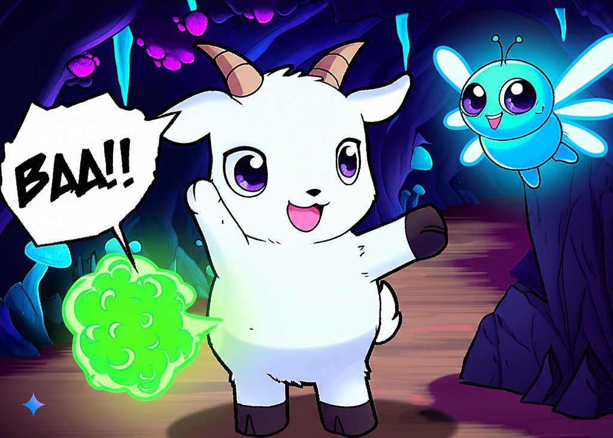

Chapter 1: The Accidental Isekai
Panel 1
Bartholomew: "Baa...? Where's the green grass? And why are these giant two-legged creatures so loud?"
Panel 2
SFX: *VROOOOM*
Panel 3
SFX: *WHOOSH*
Panel 4
Bartholomew: "Baa...?! Where am I now? The grass is so... sparkly?"
Panel 5
SFX: *Flutter...*
Panel 6

SFX: *Tinkle... Plink...*
Bartholomew: "Did... did it just talk to me?"
Panel 7

SFX: *Rustle...*
Bartholomew: "Wait... this place doesn't feel so safe anymore..."
Panel 8

Bartholomew: "Baa! Even a baby goat won't back down!"
Panel 9

SFX: *THUMP!* *GRAWR!*
Panel 10

Bartholomew: "Baa? Did... did something just happen?"
Panel 11

SFX: *Growl...*
Panel 12
Bartholomew: "Baa! (Bring it on!)"
End of Chapter 1
Chapter 2: The Emerging Mystery
Panel 13

Bartholomew: "Baa... This flower tastes much better than city grass!"
Panel 14
SFX: *Baa? Meeh?* *Twee... Loo...*
Bartholomew: "It's like it's trying to tell me something... but I don't speak... glowy bug?"
Panel 15

SFX: *Clip clop... Flutter flutter...*
Panel 16

Bartholomew: "Wow! I've never seen water with so many shiny things inside!"
Panel 17

SFX: *RUSTLE! GRRR...*
Panel 18
Bartholomew: "Not again! I might be small, but I won't be easy prey!"
Panel 19

SFX: *ZING! TINKLE TINKLE!* *ROAR?*
Panel 20
SFX: *THWACK!* *YELP!*
Panel 21
Bartholomew: "Baa! (Don't underestimate a baby goat!)"
Panel 22
SFX: *GRUMBLE...* *Flutter...*
Panel 23

SFX: *Soft glow...*
Panel 24

Bartholomew: "Maybe being an isekai baby goat won't be so bad after all... especially with a friend by my side!"
End of Chapter 2
Chapter 3: The Awakening of Power
Panel 25

SFX: *Glug glug...*
Panel 26

SFX: *PFFT!*
Panel 27
Glowing Creature: "?! Twi-nk-le... Fooo-ey... ?"
Panel 28

Bartholomew: "Baa? What was that?"
Panel 29
SFX: *FLAP FLAP!* *WHOOSH?*
Panel 30

SFX: *PRRRT!*
Panel 31

SFX: *Thump... thump...* *Dizzyyy...*
Panel 32

Bartholomew: "Baa?! Did *I* do that?"
Glowing Creature: "Oooooh... Pee-yew... Pow-er...?"
Panel 33
SFX: *FFFFWRRRR!*
Panel 34

SFX: *CRUMBLE!*
Panel 35

Bartholomew: "Baa...? I... I have fart powers?!"
Glowing Creature: "Wow! Go-at... Pow-er... Strong!"
Panel 36
Bartholomew: "Baa! (Looks like this is my isekai cheat skill!)"
End of Chapter 3
To be continued...?